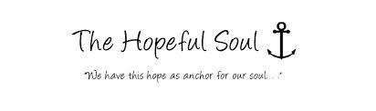

This site is copyright © 2014
Jahir Raihan
email:jahir2014xyz@gmail.com
Hey this is my website, so I have to say something about myself. Sometimes it is hard to introduce yourself because you know yourself so well that you do not know where to start with. Let me give a try to see that my impression about myself and your impression about me are not so different. Here it goes.
I am a person who is positive about every aspect of life. There are many things I like to do, to see, and to experience.Now I am completing HSC in South Asian College Chittagong. It is First Digital College in Chittagong. I live in Chittagong with my family. My father has diet in 2005. My family is extended family. I have five brothers and two sisters and I'm the youngest of all. I am very simple. I like to see the sunrise in the morning, I like to see the moonlight at wind coming from the ocean. I like to look at the clouds in the sky with a blank mind.
I like to do thought experiment when I cannot sleep in the middle of the night. I like flowers in spring, rain in summer, leaves in autumn, and snow in winter. I like to sleep early, I like to get up late; I like to be alone, I like to be surrounded by people. I like country’s peace, I like metropolis’ noise; I like the beautiful west lake in Hangzhou, I like the flat cornfield in Champaign. I like delicious food and comfortable shoes; I like good books and romantic movies. I like the land and the nature, I like people. And, I like to laugh.
 I always wanted to be a great one. Of course, I am nowhere close to these people, yet. I am just someone who does some teaching, some research, and some writing. But my dream is still alive. I have Nothing more
This site is copyright © 2014
Jahir Raihan
email:jahir2014xyz@gmail.com